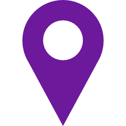

The challenges of the hackathon, Hack for Sweden 2018, have been produced in cooperation with our partner government agencies. The challenges are clustered under the following six categories. The specific challenges under each category will be presented here, prior to the event. Each week up until the hackathon weekend, 13-15 April, we will reveal the specific challenges for one of the categories. Keep posted and follow us on social media!
How You Doin' Sweden

I Like The Way you Move
Smells Like Green Spirit
AI Have A Dream
May The Force Be With You